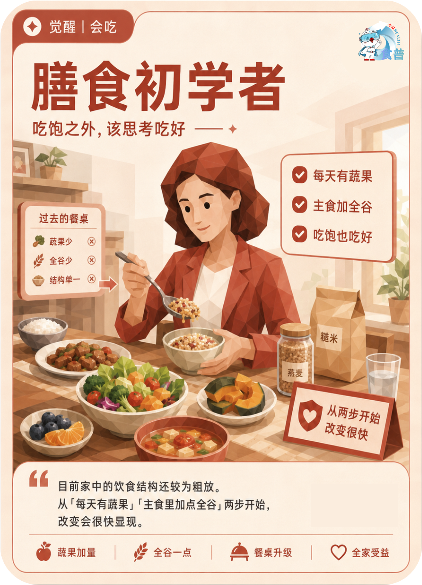

健康主理人
觉醒
会吃
F14
膳食初学者
吃饱之外,该思考吃好
目前家中的饮食结构还较为粗放。从「每天有蔬果」「主食里加点全谷」两步开始,改变会很快显现。
手机端可点击“打开原图”后长按图片保存；也可以直接长按上方图卡保存。

吃饱之外,该思考吃好
目前家中的饮食结构还较为粗放。从「每天有蔬果」「主食里加点全谷」两步开始,改变会很快显现。
手机端可点击“打开原图”后长按图片保存；也可以直接长按上方图卡保存。